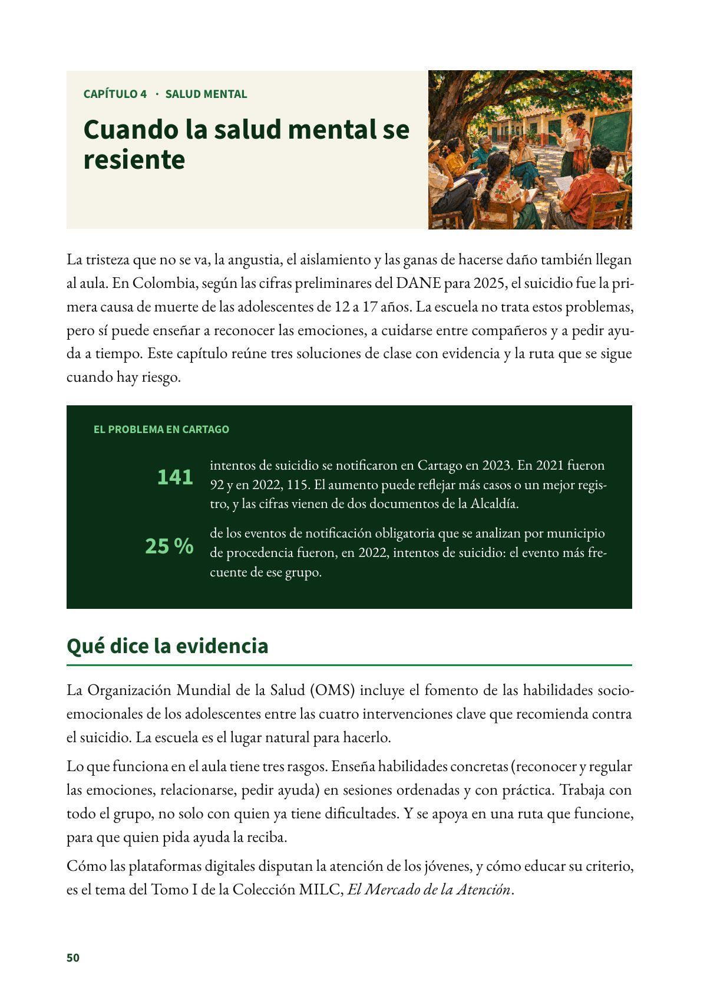
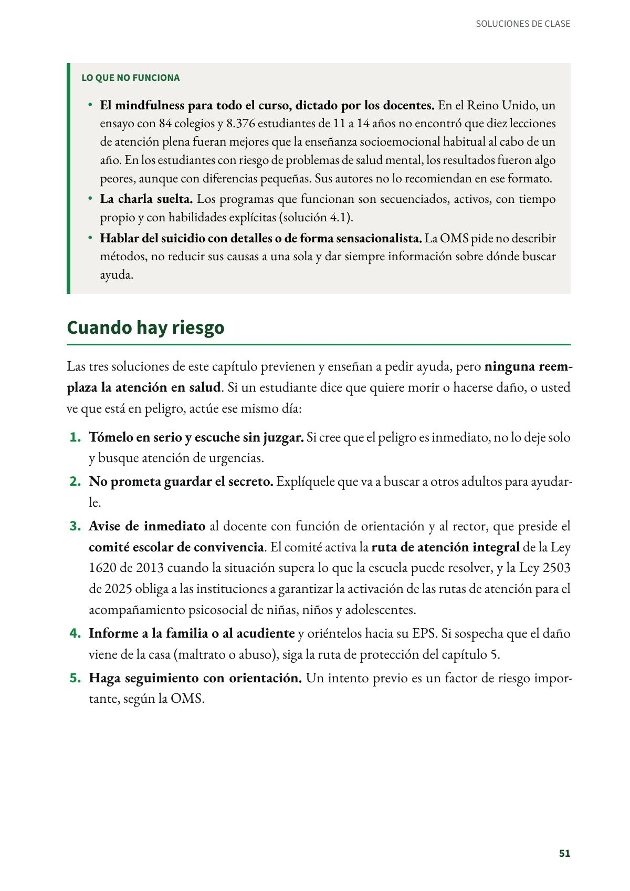

Cuando la salud mental se resiente
La tristeza que no se va, la angustia, el aislamiento y las ganas de hacerse daño también llegan al aula.
PDF · 3 págs. · 1,2 MBLa tristeza que no se va, la angustia, el aislamiento y las ganas de hacerse daño también llegan al aula. En Colombia, según las cifras preliminares del DANE para 2025, el suicidio fue la primera causa de muerte de las adolescentes de 12 a 17 años. La escuela no trata estos problemas, pero sí puede enseñar a reconocer las emociones, a cuidarse entre compañeros y a pedir ayuda a tiempo. Este capítulo reúne tres soluciones de clase con evidencia y la ruta que se sigue cuando hay riesgo.
El problema en Cartago
- 141 intentos de suicidio se notificaron en Cartago en 2023. En 2021 fueron 92 y en 2022, 115. El aumento puede reflejar más casos o un mejor registro, y las cifras vienen de dos documentos de la Alcaldía.
- 25 % de los eventos de notificación obligatoria que se analizan por municipio de procedencia fueron, en 2022, intentos de suicidio: el evento más frecuente de ese grupo.
Qué dice la evidencia
La Organización Mundial de la Salud (OMS) incluye el fomento de las habilidades socioemocionales de los adolescentes entre las cuatro intervenciones clave que recomienda contra el suicidio. La escuela es el lugar natural para hacerlo.
Lo que funciona en el aula tiene tres rasgos. Enseña habilidades concretas (reconocer y regular las emociones, relacionarse, pedir ayuda) en sesiones ordenadas y con práctica. Trabaja con todo el grupo, no solo con quien ya tiene dificultades. Y se apoya en una ruta que funcione, para que quien pida ayuda la reciba.
Cómo las plataformas digitales disputan la atención de los jóvenes, y cómo educar su criterio, es el tema del Tomo I de la Colección MILC, El Mercado de la Atención.
Lo que no funciona
- El mindfulness para todo el curso, dictado por los docentes. En el Reino Unido, un ensayo con 84 colegios y 8.376 estudiantes de 11 a 14 años no encontró que diez lecciones de atención plena fueran mejores que la enseñanza socioemocional habitual al cabo de un año. En los estudiantes con riesgo de problemas de salud mental, los resultados fueron algo peores, aunque con diferencias pequeñas. Sus autores no lo recomiendan en ese formato.
- La charla suelta. Los programas que funcionan son secuenciados, activos, con tiempo propio y con habilidades explícitas (solución 4.1).
- Hablar del suicidio con detalles o de forma sensacionalista. La OMS pide no describir métodos, no reducir sus causas a una sola y dar siempre información sobre dónde buscar ayuda.
Cuando hay riesgo
Las tres soluciones de este capítulo previenen y enseñan a pedir ayuda, pero ninguna reemplaza la atención en salud. Si un estudiante dice que quiere morir o hacerse daño, o usted ve que está en peligro, actúe ese mismo día:
- Tómelo en serio y escuche sin juzgar. Si cree que el peligro es inmediato, no lo deje solo y busque atención de urgencias.
- No prometa guardar el secreto. Explíquele que va a buscar a otros adultos para ayudarle.
- Avise de inmediato al docente con función de orientación y al rector, que preside el comité escolar de convivencia. El comité activa la ruta de atención integral de la Ley 1620 de 2013 cuando la situación supera lo que la escuela puede resolver, y la Ley 2503 de 2025 obliga a las instituciones a garantizar la activación de las rutas de atención para el acompañamiento psicosocial de niñas, niños y adolescentes.
- Informe a la familia o al acudiente y oriéntelos hacia su EPS. Si sospecha que el daño viene de la casa (maltrato o abuso), siga la ruta de protección del capítulo 5.
- Haga seguimiento con orientación. Un intento previo es un factor de riesgo importante, según la OMS.
Para pedir ayuda. Línea 106 del Ministerio de Salud: orientación en salud mental gratuita y confidencial, las 24 horas, desde teléfono fijo o celular. Línea 141 del ICBF: gratuita y nacional, las 24 horas, para reportar o pedir orientación sobre maltrato, violencia sexual o acoso escolar contra niñas, niños y adolescentes. Compártalas con sus estudiantes y sus familias.
Fuentes del capítulo
Fuentes
Alcaldía de Cartago. (2024a). Diagnóstico sectorial: Plan de Desarrollo Territorial 2024-2027 «Más progreso, mejor futuro» (Anexo 1; tabla 15, p. 33). cartago.gov.co
Alcaldía de Cartago. (2024b). Plan Territorial de Salud 2024-2027 (tabla 53, p. 95). cartago.gov.co
Cardenas Orozco, A. (2026). El Mercado de la Atención: Cómo se disputa la atención de los jóvenes y cómo educar el criterio en la era onlife (Colección MILC, Tomo I). Sor María Juliana Ediciones. doi.org
Congreso de la República de Colombia. (2013). Ley 1620 de 2013, arts. 12, 13 y 29. secretariasenado.gov.co
Congreso de la República de Colombia. (2025). Ley 2503 de 2025, art. 11. secretariasenado.gov.co
Departamento Administrativo Nacional de Estadística. (2026, 20 de marzo). Estadísticas vitales. Año acumulado 2025pr [Boletín técnico, cifras preliminares]. dane.gov.co
Instituto Colombiano de Bienestar Familiar. (s. f.). Línea 141. icbf.gov.co
Kuyken, W., Ball, S., Crane, C., Ganguli, P., Jones, B., Montero-Marin, J., Nuthall, E., Raja, A., Taylor, L., Tudor, K., Viner, R. M., Allwood, M., Aukland, L., Dunning, D., Casey, T., Dalrymple, N., De Wilde, K., Farley, E.-R., Harper, J., … Williams, J. M. G. (2022). Effectiveness and cost-effectiveness of universal school-based mindfulness training compared with normal school provision in reducing risk of mental health problems and promoting well-being in adolescence: The MYRIAD cluster randomised controlled trial. Evidence-Based Mental Health, 25(3), 99–109. doi.org
Ministerio de Salud y Protección Social. (s. f.). Línea 106. minsalud.gov.co
Ministerio de Salud y Protección Social. (2025). Directorio nacional de líneas territoriales de atención en salud mental en Colombia. minsalud.gov.co
Montero-Marin, J., Allwood, M., Ball, S., Crane, C., De Wilde, K., Hinze, V., Jones, B., Lord, L., Nuthall, E., Raja, A., Taylor, L., Tudor, K., MYRIAD Team, Blakemore, S.-J., Byford, S., Dalgleish, T., Ford, T., Greenberg, M. T., Ukoumunne, O. C., … Kuyken, W. (2022). School-based mindfulness training in early adolescence: What works, for whom and how in the MYRIAD trial? Evidence-Based Mental Health, 25(3), 117–124. doi.org
Organización Mundial de la Salud. (2023). Preventing suicide: A resource for media professionals, update 2023. who.int
Organización Mundial de la Salud. (2026, 3 de noviembre). Suicide [Nota descriptiva]. who.int
Así se ve en el libro
3 páginas
